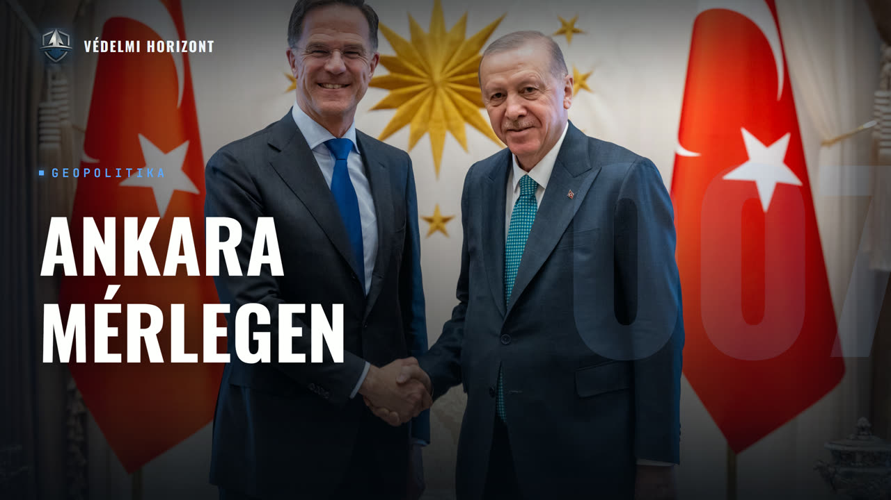

Törökország az ankarai NATO-csúcs után, helyzetértékelés Egeresi Zoltán Törökország-szakértővel

Leírás
Résztvevők: Pásztor Ákos, Egeresi Zoltán
Üdvözöljük a Védelmi Horizont kutatóműhely hetedik adásában!
Vendégünk Egeresi Zoltán, a Nemzeti Közszolgálati Egyetem John Lukács Intézetének oktatója és tudományos munkatársa, valamint a Pécsi Tudományegyetem adjunktusa, Törökország szakértő. Az Észak-atlanti Szerződés Szervezete, azaz a NATO ankarai csúcstalálkozója után abból indulunk ki, valódi stratégiai súlynövekedésről van-e szó, vagy pillanatnyi haszonszerzésről egy amerikai visszavonulás közepette. Innen jutunk el az Sz-400-asok Katar felé történő eladásához és az F-35-programhoz, az Európai Unióval 2005 óta befagyott csatlakozáshoz és a vámunió kérdéséhez, majd a ciprusi–görög patthelyzethez. A második felében országonként járjuk körbe a Közel-Keletet – Irán, Gáza, Libanon, Egyiptom –, végül a Türk Államok Szervezete és a közép-ázsiai befolyás, majd a török belpolitika kerül szóba: a CHP (Cumhuriyet Halk Partisi, magyarul Köztársasági Néppárt) szakadása, az İmamoğlu-ügy és a 2016-os puccskísérlet óta kiépült elnöki rendszer.
Leirat beszélőnként
Üdv mindenkinek! Ez itt a Védelmi Horizont. Az a podcast, ahol külpolitikai, diplomáciai, gazdasági, hadipari és biztonságpolitikai szempontok alapján nézzünk ugyanarra a témára, egyszerre, egy asztalnál. A nevem Pászor Ákos, és most ketten ülünk a mikrofonok mögött. Vendégem az adás során Egeresi Zoltán, a Nemzeti Közszolgálati Egyetem John Lukács Intézetének oktatója és tudományos munkatársa, valamint a Pécsi Tudományegyetem adjunktusa törökországszakértő. Köszönjük, hogy elfogadta a meghívásunkat!
Köszönöm a meghívást!
Tehát, mint ki is derült a vendégünk bekonferálásából, a témánk ezen adás során Törökország, és annak aktuális külpolitikai, biztonságpolitikai kérdései lesznek. Rá is térünk tehát az első és talán legfontosabb témára, amivel az utóbbi napok, hetek során Törökország igencsak a reflektorfényben volt, Ugyanis több mint húsz év után adott otthont az ország NATO csúcstalálkozónak, amivel Ankara azt próbálta bizonyítani, hogy Európa biztonsága elképzelhetetlen Törökország nélkül. Szoltán, mennyire tekintető ez valódi stratégiai súlynővkedésnek és mennyire pillanatnyi haszonszerzésnek egy amerikai visszavonulási időszakban az egész térségben?
Ez egy jó kérdés, nehéz rá határozott választ adni, hanem ez a tipikus részben ilyen, részben így, részben úgy. Amit nyugodtan ki lehet jelenteni, hogy jelenlegi helyzetben a NATO szempontjából, illetve Amerika szempontjából Törökországnak a súlya, jelentősége valóban növekszik, hiszen hogyha abból indulunk ki, hogy NATO-nak a raison d'être az mi, vagy legalábbis mi volt még 1999-ben, ugye, hogy az oroszokat kint tartsák Európába, vagy szovjeteket. És így innentől kezdve, bármikor, amikor gond volt Keleten, akkor Felértékelődnek itt a NATO-nak a keleti tagállamai, és miután Törökország 1952-ben, tehát már jó pár évtizede csatlakozott a NATO-hoz egy kifejezetten amerikapárti török belpolitikai, illetve ezáltal klubpolitikai pillanatban, hát azóta bármikor, amikor gond van keleten, akkor Törökországnak a szava és súlya növekszik. És ehhez társul az, hogy NATO-nak az egyik legnagyobb Hád ereje az Törökországban van. Ugye sokszor azt szokták mondani így a magyar médiában, hogy a NATO második legerősebb hadserege, na most ugye ez így nem igaz, most azon túlmenően hogyan definiáljuk a legerősebbet, amit viszont biztosan ki tudunk jelenteni, hogy a NATO második legnagyobb létszámú hadseregéről van szó, ugye több mint 350 ezer emberről, és még ezen kívül egyébként sok más Fegyveres csapat is van az országban, csendőrök is még sorolhatnánk, illetve itt is azért azt jegyezzük meg, hogy a török haderő azért az előző években, évtizedekben mind az ország határaink belül, mind az ország határaink kívül elég sok misszió vagy akcióban, offenzívában vett részt. A török haderő az meglehetősen tapasztalatnak is tekinthető, illetve az utóbbi években, de ez messze nem a Erdoğan-ciklusnak az eredmény, ez már korábban kezdődött, még akkor is, hogyha most ők aratják le a hosszú munkának a gyümölcseit, hogy a török hadípar az egy hatalmas fellendülésben és felévelésben van. Számos olyan termékkel megjelentek a nemzetközi piacon, ami bejárta a magyar sajtót is. Most főleg a drónokról lehet beszélni, de igazából, és ez egyébként már alapvetően Erdogannak az eredménye, hogy az ő ciklusához kapcsolódik, sikerült elérni azt, hogy a törökök által használt hadipari termékeknek a döntő többsége azt Törökországban is készüljön el. Korábban ez nagyon nem így nézett ki. És hogy ebben a jelenlegi helyzetben, ahogy itt a NATO keleti határainál egy nagyon komoly háború folyik, aminek nem tudjuk, mi lesz a vége, Most itt ez az orosz-ukrán történetre gondoltam, de ezen kívül vannak más konfliktus gócok is. A Kaukázusról most nem is beszélve, de ott van a 2026-os év egyik legnagyobb híre, ugye ez az amerikai Izraeli-iráni összecsapás, aminek per pillanat megint nem látjuk a végét, illetve hát 2023. október 7-e óta egy komoly átrendeződés zajlik a közel-keleten, és hát itt megint előjön Törökországnak a geostratégiai elhelyezkedése. Törökország minden komolyabb konfliktus Egyrészt belátható földrajzi távolságban van, és hát ez Magyarországnak is igencsak fontos. Ezt a 2015-16-os migrációs válság idején mi is tudtuk, hogy mi is megéreztük, hogy ha Törökország nem úgy áll a dolgokhoz, akkor az bizony eléri, elérheti bizonyos esetekben Közép-Európát is. Éppen ebből a szempontból egyértelmű, hogy A NATO számára, mondhatnánk ezt intézményesítve, ha sok a konfliktus a Közel-Keleten, illetve Kelet-Európában, akkor Törökország jelentősége növekszik. Viszont ez nem csak ennyi, hanem amit láthatunk itt az ankarai csúcson, Trump látogatása, a Trump-Erdogan párbeszéd, az már sokkal inkább egy ilyen személyes történet, és hát ez alapvetően arra Nehéz megfogalmazni, egy fegyver barátságra épül, ami az előző 10 évben kialakult Erdogan és Trump között. Az amerikai elnök kifejezetten szívélyes viszonyban van a török államfővel, ami egyébként nem egy könnyű történet, ismerve Trumpnak a gyorsan változó Hozzáállását a különböző emberekhez, úgyhogy ezt mondhatnánk, hogy egy ilyen kvázi olimpiai siker a török külpolitika vagy a török vezetés részéről, de azt tényleg sokszor ezt egyébként török szakértők is csodálkozva mondják, hogy hát már ugye Jó ideje, lassan két éve vagy másfél éve Trump vezeti Amerikát, és eddig még semmi probléma nem volt Törökország irányában. Ez rettenetesen ritka, azért az utóbbi évek, különösen, hogyha demokrata kormányzat volt, akkor láthattunk problémákat amerikai-török viszonylatban, viszont ennek most tökéletesen az ellenkező példáját látjuk. Ebből kifolyólag is És ezt egyébként Trump hangsúlyozta, hogy azért jön most a NATO csúcsra, illetve azért is van ez Törökországban, mert ilyen kifejezetten jó a viszony a török vezetővel. És ezt pedig belpolitikailag a török vezetés messze menően igyekezett kihasználni. Nyilván gondolom a kedves hallgatók nem követték a török médiát, de gyakorlatilag a NATO csúcs alatt, már előtte is, Felkészülésről, a rendezvényről szólt minden, Ankarába új utak, új épületek épültek, tehát óriási erővel készült a kormányzat erre a látogatásra, és egy folyamatos közvetítés volt, szakértői blokkok rengeteg rendezvényt is megvalósítottak a NATO csúcs örve alatt. Nyilván ahhoz kapcsolódóan, tehát mondhatjuk azt, hogy egy idézőesen átlagos látócsúcshoz képest, bár politikailag a török vezetés ezt nagyon is kihasználta, nyilván a saját fontosságát demonstrálandó, amihez Donald Trump egy tökéletes partnernek is bizonyult.
Sokszor említetted a monológot során, hogy Törökország mennyire mutatni szerette volna magát az elkötelezettségének a NATO irányába, különösen az Egyesült Államok felé, és hogy mennyi konfliktusban is érintett az ország így a legutóbbi három-négy évben. Mennyire tekinthető ezek mellett az a lépése a török kormányzatnak, úgymond kenyértörésnek Moszkva irányába, hogy eladta az SZ-400-as légvédelmi rendszerét Katarnak, vagy esetleg mennyire tekinthető inkább úgymond biztonságpolitikai, szakpolitikai lépésnek, mondvá, hogy a szövetséges főhitelező kataraiak igencsak rászorulnak az iráni támadások miatt a légvédelmi rendszerre.
Egyelőre azért azt mondanám, hogy várjuk ki ennek a történetnek a végét. Nyilván amennyiben ez megvalósul, vagy megvalósulhat, annak vannak pozitív hatása. Egyrészt az utóbbi hónapokban az öbölmenti államoknak a légvédelme az meglehetősen redukálódott, hiszen nagyon sok mindent ellövöldözgettek. Ebből a szempontból ez nyilván pozitív fordulat lenne. Ráadásul egész jó vélemények vannak az SZ-400-asról, úgyhogy ebből a szempontból különösen azt látjuk, hogy a konfliktus az folytatódik, ez növelné, ha nem is oldaná meg a katari vagy másből államnak a védelmi problémáit. Az igazi török szempontból az igazi előrelépés az lenne, hogy ha sikerülne Megszabadulni erről az SZ-400-as ütegektől, akkor az Egyesült Államok feloldhatná az eddigi szankciókat, amit egyébként még Trump írt alá 2020-ban. Mint ismeretes, 2017-ben elindultak a tárgyalások Oroszországgal, hogy Törökország szeretne ilyen SZ-400-as ütegeket. Légvédelmi rakétarendszert vásárolni, és ezt 2019 végéig meg is kapták. És utána, ezt az első perctől kezdve nehezményezték az amerikaiak, lendült Kezdett el ezzel foglalkozni az amerikai közigazgatás és így jutottunk oda, hogy Törökországot szankcionálták, aminek az lett a zsoldja, hogy kirakták őket az F-35-ös vadászgépfejlesztési projektből, ami hát elég sok milliárd dolláros pénztnek az elvesztéséhez is vezetett Törökország részéről, másrészt pedig azt különösen rosszul esett nekik, hogy néhány finoman szólva is Törökország a problémás viszonyban lévő állam, Görögország is még sorolhatjuk, ez ebből a új fegyverből majd részesülhet. Úgyhogy innentől kezdve a török külpolitikának részben az volt a célja, hogy ezt valahogy visszacsinálják és a szankciókat kivezessék. Most ebben a rendkívül jó légkörben úgy tűnik, hogy Megvan egyértelműen az amerikai vezetésnek a támogatása. Mondjuk az más kérdés, hogy ez kongresszusi döntés, tehát önmagában a Donald Trump jó indulata itt Magyarországon azért nem lesz elég. A másik nagyon fontos, hogy az amerikai, pontosan az S-400-asnak a valamilyen úton, módon történő Elszállítását követelik, és az elmúlt években rengeteg tervet javasoltak a törökök, tehát nem ez a mostani az első. Ezért is inkább várjuk ki a végét, én azt mondanám. És hát a másik, hogy nem látjuk, hogy az oroszok egyelőre erre hogyan reagálnak. Ők nem Nem túl boldogok ezt illetően, és az nagyon azért fontos látni, hogy amikor ez 2017-2019-ben megtörtént, ez a kérés, illetve biznisz, akkor az egy szintén komplikált közel-keleti helyzetnek az eredménye, amelyben gyakorlatilag egy ilyen több fronton zajló alkudozási folyamat keretében Írták el ezt a szerződést az oroszok és törökök, hiszen akkor, most ebben nem menjünk bele, mert nem lesz rá időnk, de hogy ugye Szíriában voltak eltérő érdekeik, hogy fogalmazzunk úgy, hogy ott is, és az ottani adok-kapok egyezkedés keretében született meg ez a döntés, ami egyébként nyilván növelte a török légvédelmi kapacitásokat. Szóval egy szó, mint száz, most mindenki keresi azt a megoldást, hogy a káposzta is megmaradjon és a kecske is jól lakjon, míg egyelőre várjuk ki a végét, én azt mondanám, de alapvetően ez a probléma, tehát hogyha sikerülne megoldani ezt az S400-ast, Akkor onnantól kezdve nagy valószínűséggel az Egyesült Államok nagyon sok fegyverszállítás, illetve közös fejlesztési projektben, és az F-35 az csak az egy nagyon jó példa erre, sokkal konstruktívabban áll a törökökhöz. És azért azt is látni kell egyébként, hogy ha már 2019-20-ban az amerikai, akik ilyen keményen bántak a törökökkel, akkor ők nagy erőkkel elkezdtek a saját hadiparuk fejlesztésébe kezdeni. Nekik is elindult egy ilyen F-35-ös-höz hasonló harci repülőgépnek a fejlesztése, KAN-nak hívják. Viszont a török hadipanak az egyik nagy gyengesége az a motorhajtóműnek a problematikája, ehhez keresnek. Partnereket, technológiát, ugye az egyik partner az pont Ukrajna, de hogyha sikerülne rendezni ezt a kérdést az Egyesült Államokkal, akkor valószínűleg ilyen téren is több fejlesztést, akár közös fejlesztést tudnának majd a jövőben eszközölni, és ehhez egy újabb lépés lenne afelé, hogy a török hadipar ezen a területen is önállóvá váljon a következő években vagy évtizedekben, és nagyon fontos, hogy prototípusokat már nagyon sok mindenből látunk, tehát ilyen Most már ballisztikus rakéták, és még sorolhatnánk, viszont egy nagy gyengessége egyelőre még a törököknek, hogy ezekből sorozatgyártást nem nagyon tudnak végrehajtani, és innentől kezdve azért még nekik idő kell. De ezen dolgoznak, és hát ahogy láttuk, hogy a drónok terén ez a Bayraktar TB2-es, és most már van Bayraktar TB3-as drónjuk is, azért nagyon sok mindent el tudtak érni.
Személyes véleményed szerint ugye mondtad, hogy az amerikaiakkal az S-400-as tolvaló megszabadulás után mennyire szoros és sokrétű hadipari biztonságpolitikai együttműködést terveznek. Szerinted adott esetben az Európai Unió legalább legfontosabb tagállamjával elképzelhetően hasonló? Illetve mennyire szabb ennek gátata az Athén, Nikózia és Tel Aviv között létrejövő, nyilván Tel Aviv Izrael nem tagja az Európai Uniónak, de azért pláne így befolyása nyilvánvalóan van az Európai Unióra. Mennyire szabbhat Törökország szoftosabb Európa politikájának gátat ez a úgymond háromszög?
Igen, itt több Egyrészt van az Európai Unió és Törökország között egy never ending csatlakozási történet. 2005 óta folynak a tárgyalások, illetve hát ezek fel vannak függesztve, szóval a tagjelöltség és a lehetőség az még elvileg Megvan, de gyakorlatilag nem történik semmi, és mint minden egyes évben többé-kevésbé elmélyorosztaló kritikákat kap az Európai Bizottság éves jelentésében Törökország. De alapvetően ez az a Egy konstrukció, ami Törökországnak az uniós kapcsolatait jellemzi, vagy amiben Törökország uniós kapcsolatai folynak. És nyilván van egy nagyon fontos szerződés, ez a 96. január 1-ben életbe lépő vámunió, ami viszont hát azóta eltelt jó pár év, és ugye ez nem egy teljes vámunió volt, hanem azóta is a törökök számtalanszor kérték és kérik azt, hogy ezt formálják, mélyítsék. Ugyanis ennek a jelenlegi helyzete meglehetősen előnytel a törökök számára, és sokkal több termékkel szeretnének bemenni az Európai Unióba, és még sorolhatnánk, viszont pont ez az a ütőkártya, amit az Európai Unió nem akar kiadni a kezéből. Úgyhogy hát én nagyon kíváncsi lennék, jó magam is, hogy mi az a Csomag, amit a törökök fel tudnának ajánlani, amire az Európai Unió jelenlegi helyzetben így brából intana. Ötleteim azért lennének. Szóval ezek a hivatalos csatornák nem túl nagy lehetőséggel kecsegtetnek a törökök számára, viszont azért azt is látni kell, hogy no hagyjak, az uniós csatlakozási folyamathoz be van fagyva, a bilaterális kapcsolatok azok jól fejlődnek, és itt kicsit visszatérhetünk Beszélgetés elején elhangzott NATO geopolitikai kihívásokhoz, hogy ahogy a NATO számára felértékelik Törökország akkor, amikor keleten probléma van, ugyanúgy számos európai uniós tagállam számára is. Törökök mondják, hogy például a német-török viszony az kifejezetten jó az utóbbi években, kifejezetten jó a brit, nyilván már nem uniós tag, de európaiként idesorolhatjuk, szóval a brit-török viszony. Most perpillanat nincsen válság a Macron-Erdogan kapcsolatban se, bár ugye a franciák azok jellemzően Már említett háromszögből vagy tengelyből a görögöket támogatják nagy erőkkel. Ebből a szempontból itt Európa északibb államai, és még egyébként Lengyelország is jó kapcsolatban van Törökország, kifejezetten bilaterálisan próbálnak építeni Törökországra. Ha nézzük a hadügyi, katonai Beszerzéseket, illetve együttműködéseket, ott egy szépen fejlődő történet van. Ugye számos uniós tagállam vett többek között Magyarország és török fegyvereket, illetve néhány balkáni ország, nagy mennyi ország meg vettek török drónokat. Tehát azt mondhatjuk, hogy az az utóbbi, Években zajló folyamat, hogy az európai hadi-ipart erősítsék meg, és ebben lehetőség szerint az európai államok, és itt megint a NATO csúcsa lehet mutogatni, hogy egyre nagyobb pénzeket fordítsanak erre. Abban török cégek is, illetve Törökország is bilaterális alapokon részt vehet. Tehát lehetnek török fegyverbeszerzések, lehetnek közös fejlesztések, ezt nyilván senki nem tiltja, és a komolyabb hadiparra rendelkező európai államokban a törökök, fogalmazom úgy, hogy ott is lobbiznak, tehát ők mindenhol Magyarországtól kezdve sorolhatnánk. Vannak, ahogy említettem, fejlődő, virágzó fegyverkereskedelmi kapcsolatok, de abban, hogy ebbe az európai Katonai, fegyverkezési architektúrában Törökországnak úgymond saját jogán jelentős szerepet tudjon magának kiharcolni, mondjuk európai hiteleket kapjon. Annak a legfontosabb problémája, vagy a legfontosabb akadálya az, hát ha nem is Izrael, de Nikózia, illetve részben Atén, de főleg Nikózia. És itt van egy olyan probléma, amit nagyon jó lett volna, hogyha például ezen a NATO csúcson így Megoldanak, de nyilván ez föl sem erült és esély sincs rá. Ugye Ciprus szeretne csatlakozni a NATO-hoz, ezt Törökország akadályozza. Törökország szeretne csatlakozni az EU-hoz, ezt pedig első körben Ciprus akadályozza. Innentől kezdve ez a rókafogta csuka esete, és hát nem látszik egyelőre, hogy ebben lenne kiút, hanem mindkét fél a Erős aduászokat kihasználva gyakorlatilag befagyasztja, vagy pattoltatja ezt a helyzetet. Innentől kezdve nyilván a törökök mindent megtesznek, bilaterális alapon, cégek, de az nem várható, hogy ilyen jelentősen a Törökország ezekből a pénzekből, legalábbis belátható időn belül, De amennyire lehet, bizonyos korlátok között, Törökországgal számolni kell, és az alapvetően megbízható partnerek. Ők alapvetően például, csak hogyha megint kicsit magyar szempontból nézzük, Az összes békefenntartó misszióban a Balkánon ott voltak és ott vannak, tehát mind Boszniába vagy Koszovóba. Jött már többször adták Koszovót, illetően a főparancsnoki vezetőt. Ugyanis őknek is ugyanaz az érdek, mint nálunk, hogy itt a régióban, Dél-Kelet-Európában béke és stabilitás legyen, és ezzel pedig egy közös NATO vagy, hogyha most úgy tetszik, magyar-török érdek, és ebből ők abszolút partnerek, és ahogy említettem, Török haderő, török tapasztalat és a török fegyverzet az messze nem olyan, mint 50-60 évvel ezelőtt volt, hanem egy abszolút NATO-kompatibilis vagy bizonyos területeken NATO klasszisnak minősülő haderőről van szó.
Szóval itt sok szó esett Ciprusról az elmúlt percekben. Személyes véleményed szerint az, hogy ugye azt hiszem tavaly az Észak-Ciprusi Török köztársaságban, ami ugye egy de facto állami entitás immáron 51 éve, unionista, vagyis a déliekkel való egyesülést támogató kormányzat került hatalomra. Szerinted pont ezek miatt és a új látásmódot tekintve a török cipriótáknál sem várható előrelépése a ciprus kérdést illetően?
Nem. De elmegy picit azért részletesebben. Nyilván a török ország, vagy a Észak-cipusi török közösség az egy sajátos történet. Ugye akik ott élnek, vannak olyan törökök, akik oda lettek telepítve az 1974-es katonai intervenció óta. Illetve vannak azok, akik korábban ott születtek, ott éltek, ciprusi állampolgárok, illetve az ő leszármazottaik. És ez a két közösségnek is nyilván, ha a törökök törökül beszélnek, azért más gondolnak bizonyos dolgokról. De alapvetően ez az entitás, Ennek a biztonságát Törökország, és egész pontosan az a nagyjából 30-35 ezer katona garantája ki ott állomásozik, ugye szemben egy nagyjából 750 ezres, 800 ezres déli ciprióta szigetrésszel, vagy hát a uniós tag Ciprussal szemben. És hát itt megint egy ilyen rókafogta csukatörténet van. Biztonsági garanciák. Tehát, hogy nem fog egyetlen egy török kormányzat sem azt mondani, hogy megfelelő biztonsági garanciák nélkül, ők csak úgy kivonnák ezeket a katonákat. És hát nyilván a cipri út a görögök sem tudnának úgy idézőesen mondom, egyesülni, hogy mondjuk ott állomásozik egy tekintélyes török haderő. Illetve ők azt sem szeretnék, és ez valahol érthető is, hogy egy olyan államrendszer alakuljon ki, ahol egy ilyen bikommuniális rendszer van, tehát valahova visszatérnének a 1960-as alkotmányhoz, amikor ugye függetlenül is vált az ország, ami idézőesen mondom, túl erős pozíciókhoz juttatná a törököket. Egy egyszerű példa, ők nem szeretnének egy ilyen Boszniában élni, Ahol ott igaz, mondjuk három etnikum alkotja itt az államot, itt idézősen csak kettően, de gyakorlatilag, hogyha a nacionalizmust, eltérő etnikumoknak a nacionalizmusát belecsatornázzák az államigazgatásba, és adásul itt rengeteg seb van odavissza, hát akkor ez egy finoman szólva is problémás államigazgatás lesz, és nem fog kialakulni egy Svájc. Úgyhogy ebből a szempontból, noha ez a helyenlegi helyzet nem a legjobb, de még mindig a reálisan nézve a lehető legéletképesen. Úgyhogy ebből a szempontból igen, néha előveszik, akár Ankara, akár a Vészakciprosi Török Köztársaság vezetősége azt, hogy akkor most egyezzünk meg, egyesüljünk, folynak is tárgyalások, pontosabban legutóbb ugye 2017-ben omlottak ezek össze, azóta csak inkább tapogatózások voltak. De hogy igazából mindenki elfogadja ezt a helyzetet. A ciprusiak, mint a görögök, ők erősebb pozícióban, hiszen már nem vannak az EU-ban. Gazdaságilag ők jobban állnak. Az ő felségvizeiken történtek eddig legalábbis nagy gázmezőfeltárások, tehát ők úgy vannak, hogy nekik nem kellene engedni, tehát nyilván az éjszak-ciprusi törökök. Mögöttük az nagyon erős Törökországgal sem akarják feladni a saját biztonságokat, úgyhogy innentől kezdve én nem mondanék érdemi változást.
Tehát akkor kijelenthetjük a nézők számára is, hogy a ciprusi helyzet állandó, stagnáló az elmúlt ötven évben. Térjünk is rá a Törökország számára talán legégetőbb kérdésre, a közel-keleti konfliktusra, illetve konfliktussorozatra inkább úgy mondom. Itt én leginkább országonként mennék végig, hogy melyik országhoz, mely konfliktusban érintett országhoz milyen a viszony a Törökországnak. Itt az első főszereplő nyilvánvalóan Irán. Ali Hamenei 2026. február 28-ai megölése óta. Milyen Ankara és Teherán kapcsolata?
Ugye alapvetően Törökország figyel és próbál, amennyire lehet kimaradni ebből a konfliktusból. Alapvetően a törökök nyilván ebben a helyzetben egy biztonságpolitikai szemüvegen nézik a fejleményeket, és nekik az az érdekük, hogy minél kevesebb hatása legyen Törökországban. Ez egyébként teljesen természetes, nem szeretnének beleavatkozni ebbe a történetbe. Nekik egyébként sem egy túl erős Irán nem érdek, sem egy túl gyenge Irán nem érdek. Már csak azért sem, mert Irán egy soknemzetiségű birodalom, és pontosan az észak-nyugati határok mentén, ugye ez az Azerbaidzsánnal és részben török országgal való határokról beszélnek, ott egy jelentős azerbaidzsáni, tehát mondjuk az török kisebbség él, Ugye eltérő számokat lehet látni, de mondjuk egy ilyen 15-20 milliós közösségről van szó, akikre, hogyha szétesik Irán, mert jelenleg ilyen forgatókönyv nincs, legalábbis úgy tűnik, hogy ez kevésbé valószínű, akkor velük mindenféleképpen valamit kell kezdeni. Azerbaidzsának is, meg Törökországnak is. De ez mondjuk egy ilyen worst case szenárió lenne. Addig pedig az a cél, hogy, ahogy említettem, mindenféle komolyabb bevonódást elkerüljenek, megakadályozzanak egy nagy menekültválságot. Ugye ezt Szíriával kapcsolatban még a 2010-es években nem sikerült meglépni, és azóta belpolitikailag is nagyon sok konfliktust generált az ott élő Több milliós szíriai menekült közösség. Ezt nem szeretnék Iránnal kapcsolatban is megélni, úgyhogy ebből kifolyólag több dolog történt. Egyrészt az előző években Hát nem erre a konfliktusra készülve, de mondjuk megakadályozandó, hogy az afgánok százezer számra kelljenek át a török iráni határokkal illegálisan, ahova földrajzi viszonyok vagy terepviszonyok meengedték oda olyan 3-4 méter magas betonfalakat építettek, drónokkal, ugye hát ez úgyis nagy számmal. Gyártanak, mélységi védelemmel, másról meg egyébként olyan óriási hegyek vannak, hogy ott úgyse fognak átmenni az emberek. Szóval a lényeg az, hogy mostanra rettenetesen nehézé vált az illegális migrációt Örökországban. Nyilván nem lehetetlen, de hogy jobban fel vannak készülve, meg van a know-how. Ki is vannak építve dolgok. Másrészt pedig ugye az irániak, mint turisták átjöhetek Törökországba, de erre az volt a megoldás, hogy igen, aki a határmenti településekre jár át, mint korábban. Tehát azért eddig is volt egy jelentős turizmus. Nyilván Isztambult Bizonyos keleti városokat is nagyon szeretnek az irániak, de hogy ott a határsávban egy-két központjuk van városa, oda el lehet jönni. Aki viszont messzebbre szeretne jönni, akkor az inkább kell egy csenvízumot, illetve hát az adminisztratív eszközökkel a török hatóságok akadályozzák. A jó hír, hogy nem történt egy nagy menekültválság, illetve Törökországnak sikerült kimaradni ebből a konfliktusból. Igen, voltak Törökország területére áttévedő rakéták még az első napokban, hetekben, ezeket viszont a NATO egységei Hatástalanították, vagy sem legesítették, inkább ez a jobb szó. Innentől kezdve Törökország nyilván a hivatalos elítélő nyilatkozatok megtétele után itt elvarta az állakat, és várnak. Úgyhogy Törökország, érdekes mondani, ebbe a konfliktusra meglehetősen Háttérbe szorul, nem próbál különösebben beleavatkozni ebbe a történetbe. Nyilván, hogyha esetleg meditációról lenne szó, vagy mediállásról, bocsánat, lenne szó, akkor Törökországról bármikor fel lehet vinni. De ezt nem akarják. Ez egy elég kockázatos történet, ha más nem Azerbajcsa miatt. Illetve hát ott van az izraeli vonulat, és nyilván ezt az iráni konfliktust is ebben érdemes nézni, hogy ugye 2023 ősze óta a közel-keleten az eddigi konfliktusokhoz képest most egy új dinamika alakul ki. Ugye az addig inkább defenzívában lévő Izrael, az gyakorlatilag egy Egy támadóháború sorozatot folytat Irán, illetve a hozzá kapcsolódó proxik ellen. Ezeknek egy részét a Törökország elfogadja. Mást saját belpolitikai, illetve részben külpolitikai érdekből kifőleg pedig elítél. Itt a fő konfliktusforrás Gáza. Tehát Törökországban a palesztin kérdés az évtizedek óta egy fontos történet, és hát nyilván egy iszlamista Formációról van hatalmon, tehát Erdogannak személyesen is fontos a palesztin kérdés, személyesen is fontos Jeruzsálem helyzete, és az előző évtizedeit is az jellemezte, hogy ha a palesztin kérdés előjön, hogyha fegyveres konfliktus kerül sor Izrael és a palesztinok között, akkor a török külpötika szinte automatikusan a palesztinok pártját Pártyára áll, de erre 2009-ben is volt egy nagyon emblematikus összecsattanás, amikor a Davoszi világ csúcson Erdogan kiosztotta az izraeli államfőt, ezt a híres egy perc beszéd, akinek van ideje Youtube-on hallgassa meg, hát nem lesz hosszú, de az biztos, hogy nagyon erőteljesen Itt élte el egyiként akkor is, vagy azt megelőzően is egy izraeli beavatkozás volt Gázába. Most ugyanezt láthatjuk, csak ez egy sokkal hosszabb ideig tartó történet. De amikor Izrael csapást mért a Hezbollak vezetőségére, akkor azért Ankara nyilván Elítélő nyilatkozatokat tett, de annyira nem lehetett érezni ezt a hevességet, mint a palesztin kérdésben. És kicsit ilyesmi a helyzet Iránnal is. Ahogy azért említettem, hogy ilyen szintű változást azért nyilván nem akar Ankara. És azt is látni kell, hogy mivel a 2024 végén megtörtént egy rezsimváltás Szíriába, és egy kifejezetten török országgal baráti vezetés került hatalomra, ugye a külügyminiszter az török országba PHD-zik, És még sorolhatnánk, nyilván nem ez a legfontosabb kapocs, de hogy tényleg nagy összefüggés van a két vezetés között. Ebben a hely és török csapatokállomásoznak ott ugye a Kurt kérdést idézőelesen sikerült megoldani most az év elején Ankarának tetsző módon. Úgyhogy az ottani Kurt függetlenségi törekvéseket egyenlőre mondjuk azt, hogy befagytak. De ott van az az esély, Mivel Izrael, Törökország állandó elítélő nyilatkozatai és akciói miatt, illetve Hamasz folyamatos támogatása miatt egyre nagyobb veszélyt lát Ankarába, ez majd a következőben valamilyen szintű konfliktushoz vezethez. Ugye azt lehet látni, hogy az izraeli védelmi vagy biztonsági dokumentumokban Törökország egyre inkább mint ellenség vagy fenyegető hatalomként jelenik meg. Tehát lassan már Törökország lesz az új Irán. És nyilván mindenki azt mondja, hogy azért nyilván nem ennyire rossz a helyzet, meg azért Törökország NATO-tag, stb. stb. Tehát ez nem ugyanaz a történet. Ez így is van. Kialakulhatnak új frontok, ahol a két ország akár proxy hadviselésbe is belekezdhet, tehát mondjuk Izrael Sziriába kezd el bizonyos csoportokat támogatni vagy támadni, és hát nyilván Törökország pedig azt fogja mondani, A fennálló rezsimvédelme az ő stratégiai érdeke. És akkor itt föl lehetnek olyan problémák, kérdések, hogy mi lesz a kurdokkal. Ugye az fontos tudni, hogy közel-keretben a régióban az egyetlen állam, ami támogatja a kurd függetlenségi törekvéseket az Izrael. Nyilván az ellenzők között van mindenki más, tehát Irán is, meg mondjuk Irak is, vagy foglalkozzunk úgy, hogy az arab államok, tehát Törökország egy ilyen esetben nem lenne egyedül, de itt felmető rengeteg olyan potenciális konfliktus, illetve proxy merülhet föl, ami a következő években akár problémát is okozhat. Jelenleg nyilván nem ennyire kélezett ez a helyzet. Izraelbe év végén választások lesznek. Lehet, hogy sikerül. Itt óriási kérdőjelek vannak persze. Valami kezelhető megállapodást iránylata tettőláhozni, és a jelenlegi konfliktus is holdpontra jusson. Legyünk optimisták. De amennyiben nyilván ez nem történik meg, akkor itt várható, hogy ez az előző években indult tendencia még folytatódni fog. És ez Törökország számára is egyre több gondot fog okozni. Hát azt legalább elmondhatja, hogy a hadi iparát nagyba fejleszte és egyébként, ha már így előjött Izrael, ugye Törökország is elkezdte fejleszteni a saját idézőles vas kupoláját és arra már a kezetektől nagyon odafigyelnek, hogy ne csak rakételhárító rendszerek legyenek, Ha nem kifejezetten kicsi drónokra is készüljenek. Tehát nagyon követik az ukrajnai fejleményeket és hát ezeket igyekszik, az így megszerzett tudást és vívmányokat igyekszenek beépíteni az ő védelmi rendszereikbe is.
Szóval egy eléggé friss élményem van a török-palesztin kapcsolatokról, ugyanis az adást megelőzően egy török élelmiszerboltba jártam a Baros utcában, és hát az élelmiszerek körülbelül egy harmada, egy negyede palesztin eredetű, rá van írva szépen törökül, arabul, angolul, hogy palesztináról számozik, úgyhogy aki a Baros utcában járt vagy jár a közeljövőben, az személyesen is megnézheti, hogy igen, nagyon aktívak a török-palesztin kapcsolatok. Amit szerintem keveset szoktunk taglalni Törökország közelkerületi viszonyaival kapcsolatban, az Törökország Libanonhoz való viszonya. Libanonnal kapcsolatban mi a török érdek, illetve van-e valami kapcsolat a Hezbollak és az ankarai vezetés között, ha már például a Hamasszal van ilyen kapcsolat a Törökországnak.
Tehát nem különösebb kapcsolat van. Ugye a Hezbollak az kifejezetten iráni proxi, siíták. A török vezetés, ami kifejezetten szunnitaként határozza meg magát, fogalmazunk úgy, hogy korlátozottan kereste a kapcsolatokat és lehetőségeket. Nyilván Libanonban a legparti képesebb Aktól ilyen szempontból az volt, hogy szunita közösség lenne, viszont az csak egy a sok közül. Úgyhogy Ankarának kifejezetten a nagy geostratégiai narratívája az, hogy legyen békesség, és még a 2010-es években, amikor Ahmed Davutoglu volt külügyminiszter, akkor igyekeztek ott mediálni a különböző libanoni frakciók között. Azonban nem mondanám azt, hogy Libanon különösebben a török geostratégiai érdekeknek a keresztüzében van. Nyilván a konfliktusokat próbálnak elkülönni, illetve hát azt meg elítélik, hogy Izrael érdekszférát, illetve hát területeket von maga uralma alá, de ezt nem kifejezetten a Hezbollahnak a támogatása vagy fontossága miatt teszik, hanem azért, mert Izraelnek a túlhatalmát azt nem nézik jó szemmel. És nyilván a libanoni helyzetnek mindig van egy kihatása Szíriára, illetve odavissza. Ebből a szempontból ugye újabb menekültválságok és háborús konfliktusból fokadó gazdasági nehézségek szintén nem Ankara érdeke, de alapvetően nem Libanon van a fókuszpontban. Még ezzel szemben ugye a palesztinok történelmileg is A török belpolitikában az emberek követik, a török tévék rendszeresen tudósítanak az ottani helyzetről, tehát ebből a szempontból jóval komolyabb a kapcsolat. És hát a Hamasznak a vezetői, azok rendszeresen jártak, meg járnak Törökországba, ugyanezt ehhez valahol nem mondhatjuk el, tehát ők egyértelműen a kelet felé orientálódnak, tehát Irán felé.
Köszönjük szépen! Az elmúlt napokban, hát hetekben a NATO csúcs mellett a másik ilyen nagyobb sajtóvízhangot keltett külpolitikai esemény Törökországban az a látványos Egyiptommal való viszonyjavulás volt, ennek megfelelően egy hadipari biztonságpolitikai megalapodási született Kairó és Egyiptom kapcsán. Szerinted kijelentető-e, hogy körülbelül 10 évvel ezelőtt az egyiptomi válság, vagyis a Mohamed Morsi hatalma, illetve aztán hatalmának megdöntésével kapcsolatos ankarai visszásságok az új kairói huntával szemben elmúltak-e, és immáron ténylegesen a gyümölcsöző török-egyiptomi kapcsolatoké a jövő, és ez ennek az úgymond előszele?
Hát igen, ez az egyiptomi-török kapcsolat is sok hullámot élt meg az utóbbi években, egy évtizedekben. 2011 egy ilyen fordulópont az arab tavasz miatt. Az addigi kapcsolatok, fogalmazok úgy, hogy jók voltak, de nem voltak különösebben szorosak. Ugye ez a 2010-es évek eleje, 2000-es évek legvége, amikor létrejön látványosan vagy látványosan zajlik egy ilyen fordulat a török külpotikában és nyitnak a különböző arab államok vagy közel-kereti szomszédság felé, sokkal jobban, mint korábban nyilván bizonyos kapcsolatok megmaradtak. Morszi hatalomra kerül és 2013 nyarán őt leváltják a hatalomból, az ottani muszlim testvérisséget pedig felszámolják, betirtják. És ugye egy katonai vezetés veszi vissza a hatalmat, hiszen korábban is mindig a katonasság vezette Egyiptomot. Ez akkor nagyon rosszul érinti a török vezetést, Erdoánt személyesen, Nagyon komoly kritikával illeti az új egyiptomi vezetést, aki hasonlóan válaszol Erdoganra. Tényleg mély pontra kerül a két ország közötti viszony nagyon sok évre. Nagyon nehezen és lassan tud Törökország javítani. Erre akkor kerül sor a 2020-as évek legelejétől, amikor több katonai beavatkozást is lemenedzse, mondjuk Líbiába, és még sorolhatnánk. Komoly összeütközése van Görögországgal, az EU-val, és a külpolitikai izolációból az lesz a kiút, hogy a török vezetés egy hátraarcot hirdet. És elkezd megegyezni a különböző közel-keleti szomszédokkal is, egyébként Assaddal is megpróbáltak Szíriába, de hát ez nem jött össze, úgyhogy jött egy új rezsim, aki véletlenül, akivel már sikerült igen jó kapcsolatot létrehozni. És Egyiptomba is 2022-23-tól ennek keretében vannak Különböző szintű találkozók, Erdogan is végül az országba látogat, és különböző szerződéseket drómbásárlásról például írnak alá, és gyakorlatilag azt látjuk, hogy azóta minden komoly probléma megszűnt a két vezetés között, és ebben most már egyértelműen vastagon ott van az, hogy kezelni kell az izrael Újra töltött közel-keleti külpolitikáját, és itt szintén rengeteg hasonló érdek lesz. Gázát valahol kezelni kell, és hát ebből a szempontból a közös biztonsági érdekek azok a két országot egyfelé viszik. És ráadásul, amit érdemes megemlíteni itt a közel-kelet mellett, hogy az előző Nagyjából másfél évtizedben, ugye 2011, egy ilyen fontos korszakhatár, új fent, ugye Törökország elkezd nagyon jó kapcsolatokat kiépíteni Szomáliával, illetve pozíciókat szerezni az Afrika szarván, tehát ez az Etiópia, Szomália, Csiputi, Eritrea és környéke terület. És mivel Etiópia évek óta gátat épít, és ezáltal a Nílus ellátását, vagy a folyó vízszintjét, a folyó vízhozamát befolyásol, ami alapvetően érinti együttomat, és ez szükségszerűen egy Etióp-Egyiptomi feszültséghez szült. Most ebben a helyzetben Törökország, mint egy aktív aktor, felértékelte Egyiptom számára itt a kelet-afrikai régióban is a török külpolitikát, és ott is alapvetően hasonlóak az érdekek. Úgyhogy ebből kifolyólag számos területen azt látjuk, hogy a két országnak a külpatikai mozgása az megegyezik, mert ugyanazt akarják, többé-kevésbé. Nyilván ez nem jelenti azt, hogy innentől kezdve ez egy Szétszakíthatatlan barátság kezdődött volna, mert nem hiszem, hogy Sziszi megbocsátja Erdoánnak a korábbi kritikákat, és Erdoán se egy feledékeny ember ilyen szempontból, de pragmatikus, politikus mindkettő. Szóval még ezek az érdekek, vagy geopolitikai helyzet fennel, addig valószínűleg ők együtt fognak tudni dolgozni. Az más kérdés, hogy például, csak hogyha már az esetleges problémákról beszélnénk, hogy mondjuk mi lesz egy Egyébként kifejezetten jó ciprusi-egyiptomi kapcsolat, az mennyibe fogják majd ezt a mézes heteket vagy most már lassan éveket befolyásolni. Itt is rengeteg kérdés van, de egyértelmű, hogy itt a stratégiai érdekek most éppen kivételesen egy irányba lökik mind a két országot, és innentől kezdve a belátható időn belül itt egy mélyülő katonai-gazdasági együttműködés fogunk látni.
A másik dimenziója, külpolitikai dimenziója Törökországnak, ami legalábbis részben minket, magyarokat is érint, ugye a Türk Államok Szövetsége, címet viselő, vagy hát nevet viselő intergovernmentalis szövetség. Törökországnak változott-e az elmúlt hónapokban, években a viszonya, a stratégiája a Türk tanácsban betöltött szerepét, illetve magát a Türk tanácsot magát érintő kérdésekben, problémákban?
Hát ugye ez a Türk történet, Most azon túl, mert ugye a törökök úgy tekintenek a különböző török vagy türk népekre, hogy ez egy hatalmas nagy család, és hát ugye nyilván itt ők a legnépesebbek, legerősebbek, úgyhogy ők itt valahol a nagybácsik. Ez nyilván a török nacionalizmus létrehozásával 19.-20. században indul el, de 91 után Kezd el valóban berobbani, amikor a Szovjetunia összeomlott, és akkor különböző török államok függetlenné váltak, tehát Azerbajcsán, a Kaukázusban, ugye nekik van közös határuk is, mondjuk nagyjából 10 kilométerről van szó, de azért akkor is. És ugye ez pont a 90-es évek legeleje, ez a függetlenség a karabaki konfliktust is magával hozta, amit egyébként Törökország követett, sőt, utóbb ugye segített is ezt menedzselni, 2020-ban, illetve később. Illetve Közép-Ázsiába, Kazaksztán, Kyrgyzisztán, Üzbegisztán és Türkmenisztán. Ezeknek a kapcsolatok menedzselésére a 90-es évektől mindenkori török vezetés nagyon sokat tett. Különböző fórumokat szerveztek, ankarai csúcsok, és majd 2009-ben jut oda ez a Együttműködés, hogy létrehozzák ezt a kormányközi szervezetet, Türk Tanács, amit pár évvel ezelőtt aztán átneveztek Türk Államok Szervezetének, de hát most nyilván ezt úgy kell elképzelni, hogy van egy titkárság, ez egyébként Isztambul belvárosában található, egy ilyen régebbi, nagyon patinás épületben.
Hókai Római Romok mellett egyébként.
Hát igen, ott nem nehéz találni arrafelé, de hogy talán közelebb hozzuk Magyar turistákhoz, tehát nincs messze a bazártól. Egyébként ez a rész, sétatávolságban található, és ott dolgoznak egy ilyen 30-50 ember, ezen kívül pedig nyilván ennek van egy saját büdzséje, amit a különböző tagalmak, de főleg Törökország finanszíroz, és akkor ők szerveznek különböző találkozókat, és 2009, hogy akar egy Nahi Csabányi szerződést, vagy Nahi Csabánban egy ilyen szerződést írnak alá, ez Azerbajcsán része, Ami hát rendezi, hogy ez az intézményes együttműködés, akkor lesz egy titkásság, illetve nendszeres találkozók lesznek az államfők között. És hát azóta azt látjuk, hogy ez az együttműködés folyamatosan fejlődik, és nem csak Törökország által, nyilván az egy hatalmas motort jelent ebben az együttműködésben. Hanem több más állam is igyekszik beletenni. Kicsit olyan, hogy annyit veszel ki belőle, amennyit beleteszel. Úgyhogy Azerbajcsa nagyon aktív lett, Kazaksztán is tradicionálisan aktív. Ugye 2019-ben után, 2019-ban meghalt az addigi vezető iszlám Karimov Üzbegisztánba, és egy új, sokkal nyitottabb vezetés került hatalomra. Ők csatlakoznak is, tehát lesz egy ilyen bővülés, mélyülés, ugye Magyarország is tag lesz, igaz, csak megfigyelő 2018-ban, tehát egyre inkább nő ennek a súlya külpolitikailag is, gazdaságilag is, és nagyon fontos, hogy beáll politikailag Törökországba, tehát ezt az együttműködést a török Nemzeti oldal, vagy nemzeti radikális oldal egyszerűen imádja. Ugye ott nagyon sokan egy ilyen egységes, mondjuk azt, hogy egy ilyen Türk Unióba, vagy Turáni Unióba gondolkodnak. Ettől még nagyon messze vagyunk, és véletlenül se tévesszük össze ezt a türk államok szervezetét az Európa Unióval. Azért alapvetően óriási különbségek vannak a kettő között. De a lényeg az, hogy legalább már van ilyen, és annak ellenére, hogy ugye földrajzlag itt nagyon eltérő helyen lévő államok vannak, mások az érdekek, történelem, és még sorolhatnánk, azzal, hogy rendszeresen vannak találkozók, azért vannak eredményeik, És hát ez az utóbbi évek, mondjuk azt egy ilyen másfél évtizednek a török külpolitikájában az egyik legnagyobb siker. Ez alapvetően társadalmi konszenzust elvez, illetve itt valóban rengeteg olyan projekt indult el ezen együttműködés keretében, amit a török, illetve hát mondjuk az, hogy türk lakosság az úgy szeret mindenhol. Csak egy jó példa erre, hogy minden évben van egy ilyen Kicsit európai nős mintára, egy ilyen türk világfővárosra nevezett kulturális projekt, akkor egy várost választanak, és akkor ott mindenféle kulturális események történnek, ezt imádnak és imádják, és komoly dolgok vannak. Vagy, ha már úgy is előjött korábban, Komoly hadipari együttműködéseket írtak alá, és a török hadiparnak bizonyos szempontból egy felvevő piaca. Azerbaidzsán, de ugyanúgy számos Közép-ázsiai állami is, hát az utóbbi években, hogyha megnézzük egyébként megint a számokat, akkor egy egyértelmű növekedés van, és egyre gyakoribbá vált Azerbaidzsánnal már 2013 óta, hogy rendszeresen vannak hadgyakorlatok. És valahol azért Törökország, Mint az idézőresen domináns állam, bár ezt biztos, hogy nagyon sokan nem fogadnák el Közép-Ázsiába, de sok szempontból itt azért azt is vegyük figyelembe, hogy amikor török katonák mennek közös hagyjakorlatról, vagy ezekből az országokból hívnak delegációkat, vagy mennek a török fegyverek oda, mondjuk Azerbajcsába, közös kiképzés, stb. Akkor egy NATO-sztendert megy be ezekbe az országokba, és akárhogy is nézzük, ugye Azerbajdzsán részben orosz, Közép-Ázsia meg egy ilyen orosz-kínai érdekszféra, de ugye Törökország révén a NATO szerez bizonyos pozíciókat. Nyilván a NATO maga is, vagy egyesült államok, európai államoknak is megvannak a saját projektjeik és érdekeik, de ebből a szempontból Törökország ilyen szempontból egy nyugatosító partner.
Akkor a külpolitikai blokkot le is zártuk. A török belviszonyokat tekintve két kérdésem lenne hozzád mindösszesen. Az egyik az, hogy ez egy török hírszóval ne keverje össze senki, hogy a legfőbb török ellenzéki párt az elmúlt hetekben egy szakadási folyamaton ment át, ugyanis a volt elnökjelölt Kemal Kılıçdaroğlu úgy gondolta, hogy a jellegi pártelnök Özgür Özel-lel szembe Fog szállni a JHP, ugye ez a köztársasági néppárt, Atatürk által alapított pártnak a jogutódja, a legfőbb török ellenzéki párt. És hát ez a két ember most veszekedik a pártelnöki címért gyakorlatilag. Hogy ennek milyen hatással lehet szerinted Erdoğan utódlására, illetve esetleges újraválasztására? A végén pedig egy bónusz kérdésem lenne hozzád mindösszesen. Tegnap volt 10 évvel ezelőtt ugyanis, hogy a 2016-os török pucs kísérlet ugye kudarcot vallott, ez a július 15-ei nap, törökül Temmuzon beste. És gyakorlatilag ez Törökországban azóta is egyfajta nemzeti ünnep. A demokrácia és a jólét, vagy azt hiszem valami ilyesmi napnak hívják törökül, és ez egyfajta rendszerregitimáziációt is jelent Erdoğan számára, hogy hogy fest Törökország jelenleg tíz évvel a pucskísérlet után, mennyi minden változott, mennyi minden maradta régiben.
Igen, ez két izgalmas kérdés. Kezdjük a pártszakadással. Miről van szó? 2023-ban volt legutoljára Törökországban választás. A török alkotmány kimondja, hogy az államfő és a parlamenti választásoknak egy nap alatt kell, vagy ugyanaz a napon kell megtörténniük. Hát ez egy magyar szempontból is izgalmas, hogy egy hat párti összefogás született Törökországban egy 23-ra, és nekik lett végül a csúcsjelöltjük Kemal Kılıçdaroğlu, aki akkor a köztársasági néppárt, ugye a legnagyobb ellenzéki pártnak volt a vezetője, viszont ezen a választáson Ő vedességet szenvedett, nem sokkal, de hát, ahogy Erdogan is mondta, teljesen mindegy, hogy öt gollal vagy csak egy gollal nyerünk meg egy foci meccset, a fontos, hogy megnyerjük. És hát ez érthető módon óriási kiábrándulást Hoz vezetett az ellenzéki oldalon, és még ugyanennek az évnek az ősszén a köztársasági néppárt kongresszusán egy új vezetőt választottak, ugyanáltalában említett Özgőr Özel, aki egy jóval fiatalabb politikus, tehát akkor még éppen nem volt ötven éves, ugye Kilisdár Rólu pedig már több mint 75. Igaz, Erdoğan csak 72, tehát ő itt még Mondhatnánk, sőt, hogyha amerikaiakkal vetjük össze, akkor mi egészen fiatalok. De hogy itt volt egy belső generációváltás, és ennek a kongresszusnak a döntését vitatta Kemal Kilic der Ulu és az ő szűkebb köre, de alapvetően különösebb lapot nekik nem osztottak, ment tovább a történelem. Viszont annak köszönhetően, hogy Törökország gazdaságiak nem áll túl jól, itt alapvetően azt kell kiemelni, hogy óriási az infláció. Így, hogy már a 2020-as évek elejéhez képest már csökken, ugye a csúcs az évvel szintén 85%-os infláció volt, most már csak nagyjából 30-40% környékén alakul ez az infláció. Úgyhogy ugye az előző évek magyarországi tapasztalata alapján el lehet képzelni, milyen, amikor nem 20, hanem mondjuk 80 százalék, és hát nyilván a törökök még többnek érzik. Tehát tényleg, amikor az ember Ankarába vagy Isztambulba ott járja az utcákat, akkor hallja, hogy az emberek folyamatosan erről beszélnek, vagy pontosabban panaszkodnak, hogy mennyire drágul minden. Szóval visszakanyarodva, hogy ebben a helyzetben a 2024 tavasz helyhatósági választáson Történelmi fegyvertékként ez a köztársasági néppárt szerezte a legtöbb szavazatot, és az AKP, tehát az igazság és fejlődés pártja, Erdoğan pártja, ő második helyre szorult, és ezt pedig azt vetítette előre, hogy ha majd, elvileg 2028-ban lennének újra a választások, hogy amennyiben ez így marad, akkor bizony nem Erdoğan fog nyerni, és ráadásul a GHP, tehát a köztársasági néppárt oldalán Két nagyon komoly jelölt is felmerült ekkor már, akik közvenkutatások szerint népszerűbbek is, mint Erdoğan. Ugye az egyikük az ankarai polgármester volt, főpolgármester, ő most kevésbé fontos, a másik pedig az isztampúli főpolgármester volt, egy ilyen fiatalos, ötvenes, nagyon jó szónoki képességekkel rendelkező, jó kiállású, GHP-s vezető Ekrem Imamoglu, aki már korábban is jelezte, hogy hajlandó ringbe szállni az államfői címért. Az ő pozícióján tényleg folyamatosan erősödtek, és ez jutott el oda, vagy fejlődött, hogy 25-ben őt letartóztatták különböző alapvetően korrupciós vádakkal, és onnantól kezdve egy folyamatos válság van az ellenzéki, ugye főleg a köztársasági néppárt oldalán, és ennek az új fejleménye lett az, hogy Május végén egy bíróság kimondta, hogy hát ugye ez a 23-as kongresszusnak az eredménye az törvénytelen, és Kemal Kilicdaroglu került vissza jogilag, hivatalosan a vezetői székbe, ami automatikusan egy óriási felforduláshoz vezetett, és azóta azt látjuk, hogy egy ilyen szakadásközeli állapotba került a párt. Özgürözzel, aki hát az előző két évet Három évet menedzselte és folyamatosan, rengeteg-rengeteg tüntetésszervezet, felvonulást, megerősítendő imámolónak a pozícióját, vagy kiszabadítani idézőjelesen a Börtönből. De hát ez az akció, ez alapvetően ugye elvette tőle a pártját, úgyhogy most az van, hogy tényleg próbálnak egy alternatív megoldást találni, és mivel Kirizsderról nem hajlandó lemondani erről a pozícióról, és hát most jogilag is neki van igaza, úgy tűnik, hogy az alternatív megoldás az lesz, hogy őzgőrözel, csinál egy új pártot, ami valószínűleg azt fogja eredményezni, hogy a GHP frakciója meg a GHP Támogatóinak a szavazónak a döntő része majd ehhez egy új párthoz fog átállni. Legalábbis a közvélemény kutatások azt mutatják, bár hát mindenféle közvélemény kutatásokat lehet találni minden oldalról. Szóval ezek azt sugalják, hogy amennyibe létrejön egy új párt, akkor ők gyakorlatilag átvehetnék a GHP szavazónak a döntő részét. És még esetleg az AKP-t is megverhetnék. Persze ezzel mellette az, hogy mondjuk ő lehetne az államfő. Tehát ott még azért nem tartunk. Jelenleg az várható mindenféle bejelentések alapján, hogy a hónap végén vagy augusztus elején lesz valami kézzelfogható előrelépés. Hát sok sikert meglátjuk. Ami pedig a másik kérdést illeti, ez a 10 éves évforduló. Igen, hát az elmúlt 10 év, vagy ez a 2016. július 15-i puskisért, Ez átírta a török történelmet, és annak a legnagyobb hozadéka az azon kívül, hogy a Fethullah Gülen mozgalmat őket váltották a putcs végrehajtásával, előkészítésével. Ezt alapvetően felszámolták Törökországba. Még mindig akadnak letartóztatások, de ez már jóval kevesebb ahhoz képest, hogy milyen lendülettel zajlott ez a folyamat 2016 nyarán, őszén, 2017 elején. És hozzájárult ez az akció ahhoz, hogy most talán ez a legfontosabb hozománya, hogy bevezessék az elnöki rendszert. Ugye 2016 őszén az egyik ellenzéki párta, ami addig korábban nagyon kritikusan állt Erdoğanhoz, az kiegyezett vele, és ez lehetővé tette, hogy 17 tavaszán legyen egy alkotmánymódosítás, amit népszavazással. Nagyon komoly kappány és megkérdőjelezhető eredménnyel, de alapvetően elfogadott a nép, és azóta ez az alkotmány módosítást 2018-tól bevezette az elnöki rendszert, ami azt jelenti, hogy Recep Tayyip Erdoğan kezében Egy óriási hatalom összpontosul, ugye megszokott a miniszterelnöki pozíció, és még sorolhatnánk, és gyakorlatilag ezt látjuk. A másik pedig, hogy ezt meg Ekrem imám Olunak a letartóztatása jelenti, hogy gyakorlatilag nagyon nehéz egy alternatív ellenzéknek, mármint fogalmazunk úgy, hogy egy Erdogan lebáltására... Potens.
Potens. Azt szerintem az a legjobb szó.
Igen, vagy hát reális eséllyel jelentkező vezetőnek az indulása, mert a törökországi belviszonyok ezt már kevésbé teszik lehetővé. És akkor így itt visszatérjünk a legelső kérdésedhez, ugye a NATO csúcshoz kapcsolódóan, hogy ennek mi volt még egy nagyon fontos hozománya így Törökország szempontjából, Az valahol ez, tehát az, hogy most Trump mit ígér, az nyilván nagyon fontos, a török hadipar számára ezek tök jó lehetőségek, de igazából mellékes belpartikai szempontból, hiszen belpartikai szempontból itt az volt a főüzenet, úgyhogy Donald Trump, a világ legerősebb hatalmának a vezetője eljön Törökországba, jönnek az európai vezetők. brit miniszterelnök, német kancellár, ugye magyar miniszterelnök, és még sorolhatnánk. És senki nem teszi szóvá, hogy mi történik Törökországban. Úgyhogy ez nem kérdés. Vendszer vagy Erdoğan kritikus hangokat a csúcs előtt is tartóztattak le. Tehát igazából, és ez mutatja igazán, hogy mennyire erősödik meg Törökorszádnak a pozíció így az Egyesült Államok vagy az EU irányában, hogy ezek a kérdések egy demokrata vagy egy korábbi kormányzatok idején komoly problémát vetettek volna föl. Most már nem. Ennek megfelelően fog zajlani a következő években az erdoáni rendszerépítés, valószínűleg sokkal nagyobb beápadikai mozgástérrel, mint mondjuk a 2000-es, 2010-es évek elején volt.
Egeresi Zoltán, nagyon szépen köszönjük, hogy a vendégünk voltál! Köszönöm én is!
Ezzel a mai adás végéhez értünk. Köszönjük, hogy velünk tartottak! Ha hasznosnak találták az elhangzottakat, iratkozzanak fel a csatornánkra, kövessék a Védelmi Horozontot Spotify-on és a közösségi felületénken, és írják meg hozzászólásban, melyik témát dolgozzuk fel a következő adásokban. Minden héten új adásra jelentkezünk. Ha kérdésük, észrevételük vagy témajavaslatuk van, írjanak nekünk a védelmi.horizont.hu Kukac.gmail.com címűre. Védelmi Horizon nevében köszönjük a figyelmet és találkozunk a következő adásban.
A leirat gépi hangfelismeréssel készült, ezért tartalmazhat apró pontatlanságokat.